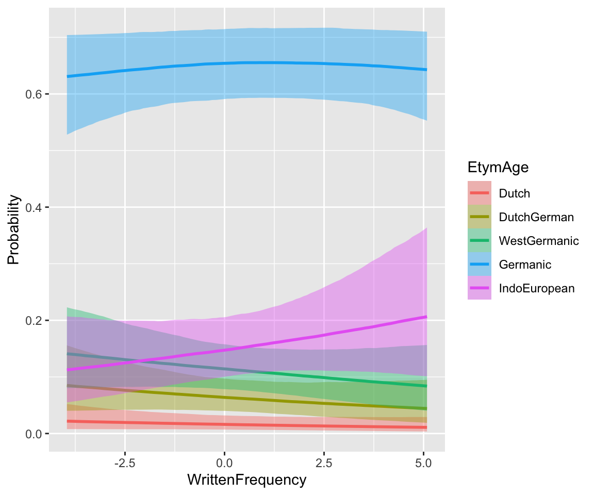
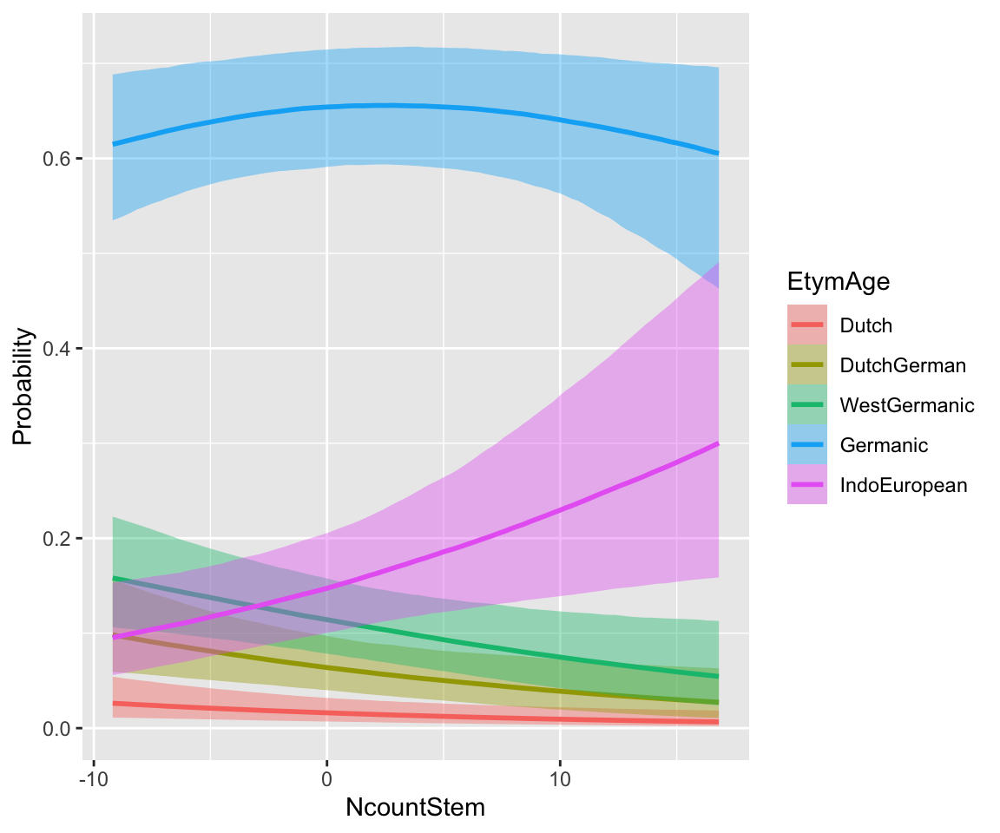
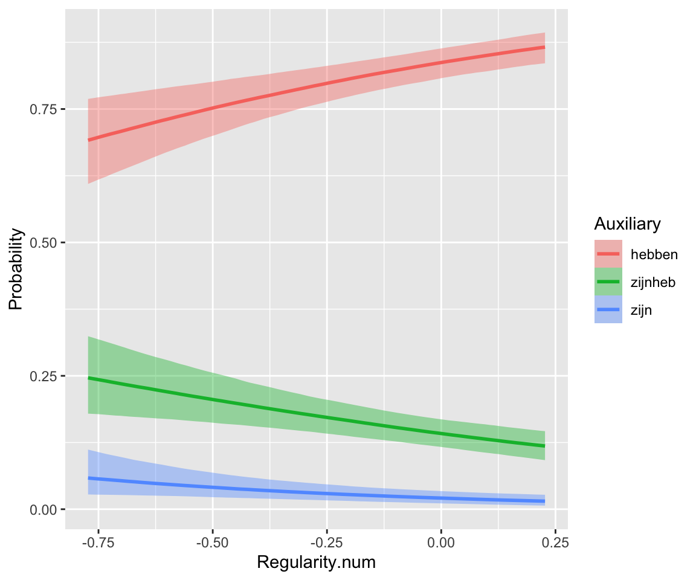

library(brms)
library(lme4)
library(arm)
library(tidyverse)
library(tidybayes)
library(bayestestR)
library(bayesplot)
library(loo)
library(modelr)
library(languageR)
library(emmeans)
library(broom.mixed)
library(mlogit)
## needed for cut2()
library(Hmisc)
library(patchwork)
# avoids bug where select from MASS is used
select <- dplyr::select8 Models for discrete data: counts, scales, and frequencies
These lecture notes cover topics from:
- Winter and Bürkner (2021), especially Sec. 3.3 on
- McElreath (2020) and Kurz (2023): Sec. 12.3
- Levshina (2015), 13.1-13.2.2
The Winter and Bürkner (2021) reading builds on Section 2.5.2, Section 2.5.4 on Poisson and negative binomial regression. The Levshina (2015) reading covers frequentist multinomial regression, briefly but clearly. I wasn’t able to find a sufficiently short and clear source for Bayesian multinomial regression. Readings covering the topic in more detail are Barreda and Silbert (2023) Sec. 12.2, or McElreath (2020) and Kurz (2023) Sec. 11.3.
Topics:
- Poisson and negative binomial regression
- Offsets, random effects
- Ordinal regression
- Multinomial regression
8.1 Preliminaries
Load libraries we will need:
Practical notes
If you have loaded
rethinking, you need to detach it before using brms. See Kurz (2023) Sec. 4.3.1.I use the
fileargument when fittingbrmsmodels to make compiling this document easier (so the models don’t refit every time I compile). You may or may not want to do this for your own models. Seefileandfile_refitarguments in?brm.Here I set the
file_refitoption so “brms will refit the model if model, data or algorithm as passed to Stan differ from what is stored in the file.”
options(brms.file_refit = "on_change")I use
chains = 4, cores = 4when fittingbrmmodels below—this means 4 chains, each to be run on one core on my laptop.cores = 4may need to be adjusted for your computer. (You may have fewer or more cores; I have 8 cores, so this leaves 50% free.) You should figure out how to use multiple cores on your machine.Make numbers be printed only to 3 digits, for neater output:
options(digits = 3)8.2 Data
8.2.1 Dyads
Load the dyads dataset discussed in Winter and Bürkner (2021), which we used in Chapter 2:1
dyads <- read.csv("https://osf.io/6j8kc/download", stringsAsFactors = TRUE)The structure of the data is described in Section 2.1, including descriptions of relevant columns.
We’ll assume below that the research questions are:
- Do participants gesture more with professors than with friends?
- Does this effect differ between Catalan and Korean speakers?
Thus, these effects are of interest for the RQs:
context,language,context:language
All predictors are two-level factors. Transform to numeric and center:
dyads <- dyads %>% mutate(
context_prof = rescale(context),
gender_M = arm::rescale(gender),
language_K = arm::rescale(language)
)Empirical effects:
Code
dyads %>% ggplot(aes(x = language, y = gestures / dur)) +
geom_boxplot(aes(color = context)) +
xlab("Context") +
ylab("Gestures") +
scale_y_log10() +
annotation_logticks(sides = "l")Note:
- We plot the rate gestures/second:
gesturesdivided bydur. - The \(y\)-axis is on a log scale.
Both correspond to the Poisson model we will fit, which models log counts (log(gestures)) using an offset for log(dur).
8.2.2 Dutch verb etymology
etymology from the languageR package. This is a dataset of “Estimated etymological age for regular and irregular monomorphemic Dutch verbs, together with other distributional predictors of regularity”, from languageR. The data is originally from Tabak, Schreuder, and Baayen (2005), and is analyzed in Baayen (2008) 6.3.2.
Variables of interest:
- Response:
EtymAge– how old a (Dutch) verb is, described as the age of the set of languages it shows up in (as a cognate)- Dutch \(<\) DutchGerman \(<\) WestGermanic \(<\) Germanic \(<\) IndoEuropean
- Predictors:
Regularity: levels irregular, regular (0, 1)WrittenFrequency: centeredNcountStem: centered
Preprocessing:
etymology <- etymology %>%
mutate(
## make EtymAge an ordered factor
EtymAge = ordered(
EtymAge,
levels = c("Dutch", "DutchGerman", "WestGermanic", "Germanic", "IndoEuropean")
),
## Center continous vars
WrittenFrequency = scale(WrittenFrequency, scale = FALSE),
## Center WrittenFrequency
NcountStem = scale(NcountStem, scale = FALSE),
## Center and scale Regularity
Regularity.std = arm::rescale(Regularity),
)
contrasts(etymology$Regularity) <- contr.helmertDifferent ways to visualize empirical effects for ordinal data:
Code
p1 <- etymology %>% ggplot(aes(x = EtymAge, y = WrittenFrequency)) +
geom_boxplot() +
scale_x_discrete(guide = guide_axis(angle = 90))
p2 <- etymology %>% ggplot(aes(y = EtymAge, x = NcountStem)) +
geom_boxplot()
p1 + p2
# histograms
etymology %>% ggplot(aes(x = EtymAge)) +
geom_histogram(stat = "count", aes(color = Regularity, fill = Regularity), position = "dodge")
## Warning in geom_histogram(stat = "count", aes(color = Regularity, fill =
## Regularity), : Ignoring unknown parameters: `binwidth`, `bins`, and `pad`
# histogram by quantile of NcountStem
etymology %>% ggplot(aes(x = EtymAge)) +
geom_histogram(stat = "count") +
facet_wrap(~ cut2(NcountStem, g = 5)) +
scale_x_discrete(guide = guide_axis(angle = 90))
## Warning in geom_histogram(stat = "count"): Ignoring unknown parameters:
## `binwidth`, `bins`, and `pad`
# proportions
p3 <- etymology %>% ggplot(aes(x = EtymAge, fill = Regularity)) +
geom_bar(position = "fill") +
theme(legend.position = "bottom") +
scale_x_discrete(guide = guide_axis(angle = 90))
# Empirical CDF: requires converting EtymAge to numeric
p4 <- ggplot(etymology, aes(x = as.numeric(EtymAge))) +
stat_ecdf(geom = "step", aes(color = Regularity)) +
xlab("EtymAge") +
theme(legend.position = "bottom")
p3 + p4It seems like lower frequency, lower neighborhood density (NcountStem), and being regular are associated with a verb being younger (closer to Dutch).
8.2.3 Idioms
This data is originally from Reddy, McCarthy, and Manandhar (2011), a study of what factors influence perception of `how literal’ a compound noun is (like “smoking jacket”, “cutting edge”).2 Traditionally compounds are classified as “idioms” or “compositional”, but in reality this is a fuzzy boundary.
The compounds can be roughly thought of as three types (column literal_meaning):
- yes – compound has a literal as well as idiomatic meaning (“melting pot”)
- no – compound does not have a (plausible) literal meanng (“front runner”)
- none – compound only has a literal meaning (“credit card”)
Important columns, after processing done below:
participant: 151 participantsscore: rating (1-6 scale) given by participant to this \(N_1\)-\(N_2\) compound noun.freq_word_1: frequency (log-transformed) of \(N_1\)freq_word_2: frequency (log-transformed) of \(N_2\)freq_word_3: frequency (log-transformed) of \(N_1\)+\(N_2\) compoundword: the \(N_1\)+\(N_2\) compound (90 compounds)literal_meaning: see above (factor with 3 levels)
idioms <- read.csv("../../data/idioms_reddy.csv", stringsAsFactors = TRUE)Let’s assume the research questions are:
- Do the frequencies of the individual nouns (
freq_word_1,freq_word_2) affectscore? - Does the frequency of the N+N compound (
freq_compound) affectscore?
Some processing:
## add 0.1 to all frequencies to avoid zero counts
## log-transform then standardize each frequency measure
## change score to 1-6 ordinal scale
idioms <- idioms %>% mutate(
freq_word_1 = arm::rescale(log(Word1_freq + 0.1)),
freq_word_2 = arm::rescale(log(Word2_freq + 0.1)),
freq_compound = arm::rescale(log(Cpd_freq + 0.1)),
participant = as.factor(as.numeric(str_match(participant, "[0-9]+"))),
score = ordered(score + 1)
)
## Remove ratings for N1 and N2 so we only have compound word ratings!
## The full dataset also has ratings of how literal N1 and N2 are.
idioms <- idioms %>%
filter(!str_detect(word, "_[0-9]")) %>%
droplevels()
## helmert coding for the 3-level factor
contrasts(idioms$literal_meaning) <- contr.helmert8.2.3.1 Data cleaning
This data comes from Amazon Mechanical Turk, and is messy—not all participants are alike. There are 90 compounds, but most participants didn’t rate all compounds. Also, many participants didn’t use the whole 1-6 scale (e.g. just 2, 4, 6; or always chose 3). Let’s consider just those who rated at least 30 compounds and used the whole scale, as an approximation of “OK participant”:
## partic who use the whole scale
p1 <- idioms %>%
group_by(participant) %>%
count(score) %>%
dplyr::summarize(ct = n()) %>%
filter(ct == 6) %>%
pull(participant) %>%
as.character()
## partic who rated at least 30 words
p2 <- names(which(xtabs(~participant, idioms) > 30))
good_participants <- intersect(p1, p2)
idioms <- idioms %>% filter(participant %in% good_participants)There are 23 OK participants.
Basic empirical effects:
Code
idioms %>% ggplot(aes(x = score, y = freq_word_1)) +
geom_boxplot() +
ylab("Word 1 frequency")
idioms %>% ggplot(aes(x = score, y = freq_word_2)) +
geom_boxplot() +
ylab("Word 2 frequency")
idioms %>% ggplot(aes(x = score, y = freq_compound)) +
geom_boxplot() +
ylab("Compound frequency")
idioms %>% ggplot(aes(x = score)) +
geom_histogram(stat = "count") +
facet_wrap(~literal_meaning, scale = "free_y")
## Warning in geom_histogram(stat = "count"): Ignoring unknown parameters:
## `binwidth`, `bins`, and `pad`Response pattern by participant:
Code
idioms %>% ggplot(aes(x = score)) +
geom_histogram(stat = "count") +
facet_wrap(~participant, scales = "free_y") +
ggtitle("Participants")
## Warning in geom_histogram(stat = "count"): Ignoring unknown parameters:
## `binwidth`, `bins`, and `pad`Pattern by word, for the first 30 N-N compounds:
Code
idioms %>%
filter(word %in% unique(idioms$word)[1:30]) %>%
ggplot(aes(x = score)) +
geom_histogram(stat = "count") +
facet_wrap(~word, scales = "free_y") +
ggtitle("Compounds")
## Warning in geom_histogram(stat = "count"): Ignoring unknown parameters:
## `binwidth`, `bins`, and `pad`It looks like participants differ in their response patterns. Note in particular how some participants have “wider” distribtions (like 191), suggesting that participants differ not just in the “intercept” but the “variance” of the distribution.
Words (= N+N compounds) also differ in their response patterns, but in a simpler way. The whole distribution is shifted more left or right; it’s not as clear that its “variance” differs by-word.
8.2.4 Dutch verb regularity
This is a dataset on Dutch verb regularity from languageR. Preprocessing:
## relevel Auxiliary to intuitive order,
## center WrittenFrequency
## make a numeric + centered version of Regularity:
regularity <- regularity %>% mutate(
Auxiliary = fct_relevel(regularity$Auxiliary, "hebben", "zijnheb"),
WrittenFrequency = scale(WrittenFrequency, scale = FALSE),
Regularity.num = arm::rescale(Regularity)
)We’ll assume:
- Response:
Auxiliary(3 levels) - Predictors:
Regularity,WrittenFrequency
Intuitively: “default” auxiliary (hebben) associated with lower frequency and regular verbs (Regularity).
p1 <- regularity %>% ggplot(aes(y = WrittenFrequency, x = Auxiliary)) +
geom_boxplot()
p2 <- regularity %>% ggplot(aes(x = Auxiliary, y = as.numeric(Regularity) - 1)) +
stat_summary(fun.data = "mean_cl_boot") +
ylab("Proportion Regularity=regular") +
ylim(0, 1)
p1 + p28.3 Poisson and negative binomial mixed-effects models
8.3.1 Poisson
We would like to fit a mixed-effects model for the dyads data testing the RQs above. See below for the model formula.
We would like to fit a mixed-effects model testing the RQs above. This is similar to Exercise 3.6, but:
- Including random effects
- Including an
offsetterm
Both better reflect the structure of this data.
To choose weakly informative priors, let’s consider the range of the data, after accounting for the offset:
Code
range(log(dyads$gestures) - log(dyads$dur))
## [1] -2.355032 -0.513021
dyads %>% ggplot(aes(x = log(gestures) - log(dur))) +
geom_histogram() +
xlab("Log(gestures) - offset")
## `stat_bin()` using `bins = 30`. Pick better value with `binwidth`.Let’s do:
- Intercept: \(\beta_0 \sim N(-1, 0.5)\)
- Chosen so that mean +- 3 SD covers about the range of the data.
On log scale, 1 would be a very large effect, corresponding to multiplying gestures by exp(1) = 2.7, so let’s choose a regularizing prior s.t. 3 SD is 1:
- \(\beta_i\) slopes: \(\beta_i \sim N(0, 0.33)\)
Random effects: reasonable scales, given priors we’ve chosen above, are 0.5 and 0.33 for slope/intercept. Let’s use 0.5 to be more conservative (flatter prior):
- Random effect variances: \(\sigma_i \sim \text{Exponential}(2)\) = 1/0.5
- Random effect correlations: \(LKJ(2)\)
We use an offset term, log(dur).
Following the tutorial, I’ll increase the iter/warmup values from their defaults.
dyads_m12_1 <- brm(
gestures ~ 1 + context_prof * language_K + gender_M +
offset(log(dur)) +
(1 + context_prof | ID),
data = dyads, family = poisson,
prior = c(
prior(normal(-1, 0.5), class = Intercept), # beta_0
prior(normal(0, 0.33), class = b),
prior(exponential(2), class = sd), # random-effect SDs
prior(lkj(2), class = cor)
),
iter = 8000, warmup = 4000, chains = 4, cores = 4,
file = "models/dyads_m12_1.brm"
)summary(dyads_m12_1)
## Family: poisson
## Links: mu = log
## Formula: gestures ~ 1 + context_prof * language_K + gender_M + offset(log(dur)) + (1 + context_prof | ID)
## Data: dyads (Number of observations: 54)
## Draws: 4 chains, each with iter = 8000; warmup = 4000; thin = 1;
## total post-warmup draws = 16000
##
## Multilevel Hyperparameters:
## ~ID (Number of levels: 27)
## Estimate Est.Error l-95% CI u-95% CI Rhat Bulk_ESS
## sd(Intercept) 0.39 0.06 0.28 0.53 1.00 4615
## sd(context_prof) 0.15 0.07 0.01 0.29 1.00 4286
## cor(Intercept,context_prof) 0.32 0.32 -0.40 0.84 1.00 12191
## Tail_ESS
## sd(Intercept) 8251
## sd(context_prof) 4544
## cor(Intercept,context_prof) 10098
##
## Regression Coefficients:
## Estimate Est.Error l-95% CI u-95% CI Rhat Bulk_ESS
## Intercept -1.03 0.08 -1.18 -0.88 1.00 3463
## context_prof -0.11 0.05 -0.22 -0.01 1.00 9501
## language_K -0.06 0.14 -0.34 0.21 1.00 4010
## gender_M -0.08 0.14 -0.35 0.19 1.00 4017
## context_prof:language_K -0.14 0.10 -0.33 0.05 1.00 9811
## Tail_ESS
## Intercept 6433
## context_prof 10437
## language_K 6577
## gender_M 6106
## context_prof:language_K 9926
##
## Draws were sampled using sampling(NUTS). For each parameter, Bulk_ESS
## and Tail_ESS are effective sample size measures, and Rhat is the potential
## scale reduction factor on split chains (at convergence, Rhat = 1).Exercise 8.1
Consider the output of
dyads_m12_1. Two rows of the regression table address RQ1 and RQ2. Which rows?Calculate Bayes Factors, using
bf_pointnull, for the model. What do the BFs, together with the 95% CredI’s from the model output for the two rows, say about RQ1 and RQ2?Calculate the 95% CredI’s for the
contexteffect whenlanguage=korean and whenlanguage=catalan. (You could use functionality fromemmeansorbrms::hypothesis, as demonstrated in the tutorial.). Does this change your interpretation from part (a)?
Code for calculating the posteriors for these effects the easy way with emmeans`, and “by hand” the harder way (but more nicely visualized), is commented-out.
We can perform a posterior predictive check, which suggests that the model isn’t overdispersed:
pp_check(dyads_m12_1, ndraws = 25)This makes sense, because the structure of the data means that the random-effect terms we’ve included are almost equivalent to including an offset for each observation.
To see the importance of the offset term, let’s fit the same model, just using default priors. (To choose weakly informative priors, we’d need to think about the distribution of gestures, without first subtracting log(dur).) This is not a correct model—as the tutorial discusses, the offset is crucial—but it is instructive to see what effect this term has.
dyads_m12_2 <- brm(
gestures ~ 1 + context_prof * language_K + gender_M +
(1 + context_prof | ID),
data = dyads, family = poisson,
iter = 8000, warmup = 4000, chains = 4, cores = 4,
file = "models/dyads_m12_2.brm"
)
dyads_m12_2
## Family: poisson
## Links: mu = log
## Formula: gestures ~ 1 + context_prof * language_K + gender_M + (1 + context_prof | ID)
## Data: dyads (Number of observations: 54)
## Draws: 4 chains, each with iter = 8000; warmup = 4000; thin = 1;
## total post-warmup draws = 16000
##
## Multilevel Hyperparameters:
## ~ID (Number of levels: 27)
## Estimate Est.Error l-95% CI u-95% CI Rhat Bulk_ESS
## sd(Intercept) 0.53 0.09 0.39 0.72 1.00 4428
## sd(context_prof) 0.22 0.07 0.09 0.37 1.00 5545
## cor(Intercept,context_prof) 0.41 0.27 -0.18 0.84 1.00 12218
## Tail_ESS
## sd(Intercept) 8135
## sd(context_prof) 5416
## cor(Intercept,context_prof) 8854
##
## Regression Coefficients:
## Estimate Est.Error l-95% CI u-95% CI Rhat Bulk_ESS
## Intercept 3.79 0.10 3.58 3.99 1.00 3616
## context_prof -0.23 0.06 -0.35 -0.11 1.00 9995
## language_K -0.23 0.21 -0.64 0.19 1.00 3343
## gender_M 0.06 0.20 -0.33 0.45 1.00 3622
## context_prof:language_K -0.36 0.12 -0.61 -0.12 1.00 9864
## Tail_ESS
## Intercept 6080
## context_prof 10718
## language_K 5935
## gender_M 6077
## context_prof:language_K 10330
##
## Draws were sampled using sampling(NUTS). For each parameter, Bulk_ESS
## and Tail_ESS are effective sample size measures, and Rhat is the potential
## scale reduction factor on split chains (at convergence, Rhat = 1).Exercise 8.2
Just based on the model’s output: What results have changed from the model (
dyads_m12_1) with the offset term? Qualitatively or quantitatively?Make an empirical plot like in Section 8.2.1 but where the \(y\)-axis is
gestures, notgestures/dur. Can you see, comparing the two plots, why your results did or did not change betweendyads_m12_1anddyads_m12_2?
8.3.2 Negative binomial
The dyads data isn’t a good case for a negative binomial model because adding the random effects already takes care of overdispersion.
Instead, let’s return to the wordbank data from Homework 1 (?sec-hw1), where the structure of the data is described:
wordbank_data <- read.csv(file = "../../data/wordbank_data_hw1.csv")We’ll build a negative binomial model for all languages, using random effects, instead of just one language (as in ?sec-hw1). This model will also contain a couple interesting additional features.
First, some pre-processing:
data_all <- wordbank_data %>%
## at least one language (Russian) has an extra lexical class (adverbs),
## restrict to these four levels for comparability across languages
filter(lexical_class %in% c("function_words", "verbs", "adjectives", "nouns")) %>%
## rows with missing values will be dropped when fitting the model anyway
filter(!is.na(lexical_class) & !is.na(frequency) & !is.na(MLU) & !is.na(num_phons)) %>%
## for convenience: total number of kids for this language
mutate(num_tot = num_true + num_false) %>%
## always run this after excluding all data with a given factor level
## (here, lexical_class)
droplevels()We can use a negative binomial model for this data, where:
- \(y\) =
num_trueis the response - The
offsetislog(num_tot), because \(y\) is not comparable across different languages, which summarize data from different numbers of children.
We’ll use a negative binomial model because this is a good default for count data (as Winter and Bürkner (2021) discuss).
Recall that for this data:
- The main effects of interest are
frequencyandlexical_class.
MLUandnum_phonsare included as controls.
We’ll allow the effects of frequency and lexical_class to differ by language, as they’re of primary interest. There is no conceptual reason to not use “maximal” random effect structure alloiwng other predictors’ effects to differ by language. We don’t do so here just so the model fits faster.
A negative binomial model allows for overdispersion using the shape parameter. The degree of overdispersion tends to differ between datasets, and it’s plausible that it would differ between languages here. We’ll allow for this by letting the shape parameter vary between languages, making this a case of distributional regression (Section 7.3), a distributional mixed-effects negative binomial model (whew!). The code for this is:
shape ~ 0 + (1 | language)The 0 is needed to keep the model from being overparametrized, for reasons I don’t totally understand (see discussion for ordinal models in Bürkner and Vuorre (2019)),3 which also require turning off how R treats 0 in model formulas by default, using the cmc = FALSE flag.
To fit this model:
wordbank_m12_1 <- brm(
data = data_all,
family = negbinomial,
brmsformula(
num_true ~ offset(log(num_tot)) + frequency + lexical_class + MLU +
num_phons + (1 + lexical_class + frequency | language),
shape ~ 0 + (1 | language),
cmc = FALSE
),
prior = prior(lkj(2), class = cor), control = list(adapt_delta = 0.99),
cores = 4, chains = 4, iter = 4000,
file = "models/wordbank_m12_1.brm"
)Results:
wordbank_m12_1
## Family: negbinomial
## Links: mu = log; shape = log
## Formula: num_true ~ offset(log(num_tot)) + frequency + lexical_class + MLU + num_phons + (1 + lexical_class + frequency | language)
## shape ~ 0 + (1 | language)
## Data: data_all (Number of observations: 2209)
## Draws: 4 chains, each with iter = 4000; warmup = 2000; thin = 1;
## total post-warmup draws = 8000
##
## Multilevel Hyperparameters:
## ~language (Number of levels: 9)
## Estimate Est.Error l-95% CI
## sd(Intercept) 0.15 0.07 0.05
## sd(lexical_classfunction_words) 0.06 0.05 0.00
## sd(lexical_classnouns) 0.09 0.04 0.02
## sd(lexical_classverbs) 0.07 0.05 0.00
## sd(frequency) 0.01 0.01 0.00
## sd(shape_Intercept) 2.61 0.63 1.69
## cor(Intercept,lexical_classfunction_words) -0.19 0.35 -0.78
## cor(Intercept,lexical_classnouns) 0.05 0.32 -0.57
## cor(lexical_classfunction_words,lexical_classnouns) 0.08 0.35 -0.61
## cor(Intercept,lexical_classverbs) -0.04 0.34 -0.66
## cor(lexical_classfunction_words,lexical_classverbs) 0.05 0.36 -0.63
## cor(lexical_classnouns,lexical_classverbs) 0.11 0.34 -0.58
## cor(Intercept,frequency) 0.21 0.35 -0.54
## cor(lexical_classfunction_words,frequency) -0.06 0.35 -0.69
## cor(lexical_classnouns,frequency) 0.08 0.34 -0.60
## cor(lexical_classverbs,frequency) 0.09 0.34 -0.59
## u-95% CI Rhat Bulk_ESS
## sd(Intercept) 0.32 1.00 2335
## sd(lexical_classfunction_words) 0.17 1.00 2436
## sd(lexical_classnouns) 0.20 1.00 2625
## sd(lexical_classverbs) 0.18 1.00 2635
## sd(frequency) 0.04 1.00 1796
## sd(shape_Intercept) 4.11 1.00 1469
## cor(Intercept,lexical_classfunction_words) 0.54 1.00 7200
## cor(Intercept,lexical_classnouns) 0.66 1.00 6042
## cor(lexical_classfunction_words,lexical_classnouns) 0.70 1.00 4953
## cor(Intercept,lexical_classverbs) 0.63 1.00 8018
## cor(lexical_classfunction_words,lexical_classverbs) 0.70 1.00 6764
## cor(lexical_classnouns,lexical_classverbs) 0.71 1.00 5182
## cor(Intercept,frequency) 0.79 1.00 5279
## cor(lexical_classfunction_words,frequency) 0.62 1.00 6153
## cor(lexical_classnouns,frequency) 0.71 1.00 6002
## cor(lexical_classverbs,frequency) 0.70 1.00 6348
## Tail_ESS
## sd(Intercept) 3680
## sd(lexical_classfunction_words) 4087
## sd(lexical_classnouns) 2502
## sd(lexical_classverbs) 4163
## sd(frequency) 3293
## sd(shape_Intercept) 2624
## cor(Intercept,lexical_classfunction_words) 6070
## cor(Intercept,lexical_classnouns) 5728
## cor(lexical_classfunction_words,lexical_classnouns) 6001
## cor(Intercept,lexical_classverbs) 5525
## cor(lexical_classfunction_words,lexical_classverbs) 6716
## cor(lexical_classnouns,lexical_classverbs) 5861
## cor(Intercept,frequency) 5884
## cor(lexical_classfunction_words,frequency) 5939
## cor(lexical_classnouns,frequency) 6045
## cor(lexical_classverbs,frequency) 6349
##
## Regression Coefficients:
## Estimate Est.Error l-95% CI u-95% CI Rhat Bulk_ESS
## Intercept 0.52 0.09 0.35 0.70 1.00 5925
## frequency 0.10 0.01 0.08 0.12 1.00 5029
## lexical_classfunction_words -0.35 0.04 -0.44 -0.27 1.00 6532
## lexical_classnouns 0.33 0.04 0.25 0.41 1.00 4795
## lexical_classverbs 0.02 0.04 -0.06 0.10 1.00 5350
## MLU -0.06 0.01 -0.07 -0.05 1.00 11935
## num_phons -0.05 0.01 -0.06 -0.04 1.00 11705
## Tail_ESS
## Intercept 5320
## frequency 4084
## lexical_classfunction_words 5697
## lexical_classnouns 4541
## lexical_classverbs 4832
## MLU 6152
## num_phons 5877
##
## Draws were sampled using sampling(NUTS). For each parameter, Bulk_ESS
## and Tail_ESS are effective sample size measures, and Rhat is the potential
## scale reduction factor on split chains (at convergence, Rhat = 1).The model is sure that the degree of overdispersion differs between languages (which row of the model table shows this?). Estimated shape by language:
coefficients(wordbank_m12_1)$language[, , "shape_Intercept"]
## Estimate Est.Error Q2.5 Q97.5
## Croatian 1.936425 0.15791380 1.624427 2.252422
## Danish 1.580384 0.09771266 1.384927 1.768805
## English (American) 2.467775 0.08303459 2.303834 2.626870
## French (Quebec) 1.926830 0.10691380 1.717689 2.134946
## Italian 2.768240 0.12506118 2.527791 3.011483
## Norwegian 2.239087 0.10422929 2.036964 2.443160
## Russian 3.212004 0.21137419 2.814662 3.644643
## Spanish (Mexican) 2.017617 0.10038822 1.819770 2.215731
## Turkish 2.923213 0.14966763 2.636315 3.225239In contrast, languages don’t clearly differ in the (linear) effect of frequency. Estimated effect by language:
coefficients(wordbank_m12_1)$language[, , "frequency"]
## Estimate Est.Error Q2.5 Q97.5
## Croatian 0.10363656 0.01440393 0.07856115 0.1370501
## Danish 0.10328881 0.01339693 0.07788560 0.1324924
## English (American) 0.10000720 0.01013044 0.08060470 0.1211183
## French (Quebec) 0.10149031 0.01200997 0.07877119 0.1275285
## Italian 0.09130544 0.01151498 0.06664543 0.1116332
## Norwegian 0.11350370 0.01746606 0.08730528 0.1543931
## Russian 0.09062921 0.01565825 0.05231868 0.1160371
## Spanish (Mexican) 0.09556585 0.01246951 0.06692819 0.1173372
## Turkish 0.10228621 0.01356939 0.07517664 0.1297730Here is one way to show the predicted effect of frequency by language (for nouns):
new_data <- data_all %>%
data_grid(
language,
frequency = seq_range(frequency, n = 100),
num_phons = mean(num_phons),
lexical_class = "nouns",
MLU = mean(MLU),
num_tot = mean(num_tot)
)
predictions <- add_epred_draws(wordbank_m12_1, newdata = new_data, re_formula = NULL)
ggplot(predictions, aes(x = frequency, y = .epred, color = language)) +
stat_summary(fun = mean, geom = "line") +
labs(
x = "Frequency", y = "Predicted Number of True Items",
title = "Effect of Frequency by Language"
) +
theme_minimal()Exercise 8.3
Make a plot showing the predicted effect of
lexical_class(\(x\)-axis) for each language, holding other predictors constant.Extra: Make your plot more informative and accurate, as follows:
- Include 95% CredI’s on predictions
- Let MLU
num_phons,frequency, andnum_totalhave their average values for a given language, rather than across the whole dataset. - Anything else you can think of.
8.4 Ordinal models
Laurestine made a nice visualization app here to help understand (cumulative) ordinal models!
8.4.1 Without random effects: etymology
We use the brms cumulative family, with default priors (for simplicity):
etymology_m12_1 <- brm(
data = etymology,
family = cumulative,
EtymAge ~ 1 + WrittenFrequency + NcountStem + Regularity,
iter = 2000, warmup = 1000, cores = 4, chains = 4,
file = "models/etymology_m12_1.brm"
)summary(etymology_m12_1)
## Family: cumulative
## Links: mu = logit; disc = identity
## Formula: EtymAge ~ 1 + WrittenFrequency + NcountStem + Regularity
## Data: etymology (Number of observations: 285)
## Draws: 4 chains, each with iter = 2000; warmup = 1000; thin = 1;
## total post-warmup draws = 4000
##
## Regression Coefficients:
## Estimate Est.Error l-95% CI u-95% CI Rhat Bulk_ESS Tail_ESS
## Intercept[1] -4.13 0.39 -4.96 -3.41 1.00 1900 2148
## Intercept[2] -2.44 0.23 -2.90 -2.00 1.00 3657 3275
## Intercept[3] -1.42 0.20 -1.81 -1.04 1.00 3480 3121
## Intercept[4] 1.76 0.22 1.35 2.19 1.00 4900 3430
## WrittenFrequency 0.08 0.07 -0.07 0.22 1.00 3887 3005
## NcountStem 0.05 0.02 0.01 0.10 1.00 3564 2510
## Regularityregular -0.83 0.24 -1.32 -0.36 1.00 3824 2775
##
## Further Distributional Parameters:
## Estimate Est.Error l-95% CI u-95% CI Rhat Bulk_ESS Tail_ESS
## disc 1.00 0.00 1.00 1.00 NA NA NA
##
## Draws were sampled using sampling(NUTS). For each parameter, Bulk_ESS
## and Tail_ESS are effective sample size measures, and Rhat is the potential
## scale reduction factor on split chains (at convergence, Rhat = 1).Interpreting some coefficients:
Cumulative probability up to each age:
cumsum(prop.table(xtabs(~EtymAge, data = etymology)))
## Dutch DutchGerman WestGermanic Germanic IndoEuropean
## 0.02807018 0.12631579 0.27719298 0.88421053 1.00000000Cumulative log-odds:
temp <- cumsum(prop.table(xtabs(~EtymAge, data = etymology)))
logit(temp)
## Dutch DutchGerman WestGermanic Germanic IndoEuropean
## -3.5445760 -1.9339340 -0.9584283 2.0329215 InfThese are similar to the “Intercepts” of the model.
Regularity effect:
- The log-odds of level \(k\) vs level \(k-1\) decreases by 0.41 for regular vs. irregular verbs.
prop.table(xtabs(~ Regularity + EtymAge, data = etymology)) -> tab
tab
## EtymAge
## Regularity Dutch DutchGerman WestGermanic Germanic IndoEuropean
## irregular 0.003508772 0.038596491 0.059649123 0.322807018 0.073684211
## regular 0.024561404 0.059649123 0.091228070 0.284210526 0.042105263Lets examine the empirical values of this for different \(k\):
## DutchGerman vs German
log(tab[2, 2] / tab[2, 1]) - log(tab[1, 2] / tab[1, 1])
## [1] -1.510592
## WestGermanic vs DutchGerman
log(tab[2, 3] / tab[2, 2]) - log(tab[1, 3] / tab[1, 2])
## [1] -0.01043488
## etc.
log(tab[2, 4] / tab[2, 3]) - log(tab[1, 4] / tab[1, 3])
## [1] -0.5522226
log(tab[2, 5] / tab[2, 4]) - log(tab[1, 5] / tab[1, 4])
## [1] -0.4322764These values around -0.4 on average, but they seem to differ a lot across \(k\). This means the proportional odds assumption may not be satisfied. (There is surely a function to check for this more cleanly.) We can account for this by allowing a category-specific effect of Regularity, which is shown in Section 8.6.3.
Let’s visualize the effects using marginal effect plots. (The coefficients are not easy to interpret directly.)
conditional_effects(etymology_m12_1, categorical = TRUE)

WrittenFrequency doesn’t have a strong effect. A higher NcountStem decreases the probability of “smaller” \(y\), and increases the probability of “larger” \(y\) (IndoEuropean). This follows from the positive sign of the coefficient: probability mass is shifted to higher \(y\) values as the predictor is increased.
Exercise 8.4 Interpret the Regularity coefficient, by filling in the following:
“The Regularity coefficient has ______ (positive/negative) sign. This means that probability mass is shifted to ____ (higher/lower) \(y\) values for Regular verbs (= higher Regularity). That is, Regular verbs are predicted to be _____ (older/younger) than Irregular verbs.”
Use an empirical CDF posterior predictive check:
pp_check(etymology_m12_1, ndraws = 50, type = "ecdf_overlay")(An ECDF plot is preferred to the default pp_check() when \(y\) is discrete.4)
This looks fine.
8.4.2 Ordinal regression with random effects
For the idioms data, a minimal model given the research questions (effect of all freq terms) should include by-participant random slopes for all freq terms. It should also include by-word random intercepts. Let’s fit this model, to the entire dataset, using LKJ(1.5) rather than the LKJ(1) default for random effect correlations:
idioms_m12_1 <- brm(
data = idioms,
family = cumulative,
score ~ 1 + freq_word_1 + freq_word_2 + freq_compound + literal_meaning + (1 + freq_word_1 + freq_word_2 + freq_compound | participant) + (1 | word),
prior = c(
prior(lkj(1.5), class = cor)
),
iter = 2000, warmup = 1000, cores = 4, chains = 4,
file = "models/idioms_m12_1.brm"
)summary(idioms_m12_1)
## Family: cumulative
## Links: mu = logit; disc = identity
## Formula: score ~ 1 + freq_word_1 + freq_word_2 + freq_compound + literal_meaning + (1 + freq_word_1 + freq_word_2 + freq_compound | participant) + (1 | word)
## Data: idioms (Number of observations: 1623)
## Draws: 4 chains, each with iter = 2000; warmup = 1000; thin = 1;
## total post-warmup draws = 4000
##
## Multilevel Hyperparameters:
## ~participant (Number of levels: 23)
## Estimate Est.Error l-95% CI u-95% CI Rhat
## sd(Intercept) 0.92 0.16 0.66 1.30 1.00
## sd(freq_word_1) 0.17 0.12 0.01 0.44 1.00
## sd(freq_word_2) 0.25 0.15 0.02 0.57 1.00
## sd(freq_compound) 0.19 0.13 0.01 0.51 1.00
## cor(Intercept,freq_word_1) -0.14 0.37 -0.79 0.62 1.00
## cor(Intercept,freq_word_2) -0.01 0.34 -0.67 0.65 1.00
## cor(freq_word_1,freq_word_2) 0.13 0.40 -0.67 0.82 1.00
## cor(Intercept,freq_compound) -0.20 0.37 -0.82 0.57 1.00
## cor(freq_word_1,freq_compound) 0.08 0.40 -0.69 0.78 1.00
## cor(freq_word_2,freq_compound) 0.01 0.39 -0.72 0.74 1.00
## Bulk_ESS Tail_ESS
## sd(Intercept) 1064 1716
## sd(freq_word_1) 1560 1704
## sd(freq_word_2) 1316 1755
## sd(freq_compound) 1939 2357
## cor(Intercept,freq_word_1) 5338 2810
## cor(Intercept,freq_word_2) 5493 2864
## cor(freq_word_1,freq_word_2) 2102 3018
## cor(Intercept,freq_compound) 4561 2700
## cor(freq_word_1,freq_compound) 3337 3086
## cor(freq_word_2,freq_compound) 3927 3088
##
## ~word (Number of levels: 90)
## Estimate Est.Error l-95% CI u-95% CI Rhat Bulk_ESS Tail_ESS
## sd(Intercept) 1.80 0.16 1.52 2.15 1.00 1035 1723
##
## Regression Coefficients:
## Estimate Est.Error l-95% CI u-95% CI Rhat Bulk_ESS Tail_ESS
## Intercept[1] -3.38 0.29 -3.95 -2.82 1.00 736 1318
## Intercept[2] -1.71 0.28 -2.26 -1.16 1.00 718 1386
## Intercept[3] -0.61 0.28 -1.15 -0.07 1.00 716 1220
## Intercept[4] 0.81 0.28 0.28 1.36 1.00 707 1367
## Intercept[5] 2.15 0.29 1.61 2.71 1.00 762 1440
## freq_word_1 0.43 0.43 -0.40 1.28 1.00 616 1071
## freq_word_2 0.04 0.43 -0.77 0.90 1.01 909 1334
## freq_compound 1.04 0.51 0.04 2.08 1.01 765 1056
## literal_meaning1 1.55 0.30 0.97 2.13 1.01 623 1098
## literal_meaning2 -0.88 0.16 -1.20 -0.58 1.00 703 1256
##
## Further Distributional Parameters:
## Estimate Est.Error l-95% CI u-95% CI Rhat Bulk_ESS Tail_ESS
## disc 1.00 0.00 1.00 1.00 NA NA NA
##
## Draws were sampled using sampling(NUTS). For each parameter, Bulk_ESS
## and Tail_ESS are effective sample size measures, and Rhat is the potential
## scale reduction factor on split chains (at convergence, Rhat = 1).freq_compound and literal_meaning have clear effects, while individual word frequencies do not (freq_word_1, freq_word_2).
conditional_effects(idioms_m12_1, categorical = TRUE)Plotting model predictions by participant is a bit confusing, if we want to compare to empirical patterns. We consider predictions for an “average word”—a single observation—in two ways:
- The distribution of predictions, by participant (= posterior predictive distribution)
- The fitted value, by participant.
What makes this confusing is that both look like histograms of values from 1-6. This is because the “fitted value” for a single observation is a vector of probabilities: the probability of each of categories 1–6. If you look closely at the two plots, you can see that the distributions in (1) are wider, for each participant. This is because on the latent scale, noise is added to the fitted value (plot (2)), resulting in a distribution which is slightly flattened out.
idioms %>%
droplevels() %>%
data_grid(freq_word_1 = 0, freq_word_2 = 0, freq_compound = 0, literal_meaning = "yes", participant) %>%
add_predicted_draws(idioms_m12_1, re_formula = ~ (1 | participant), ndraws = 500) %>%
ggplot(aes(x = .prediction)) +
geom_histogram(stat = "count") +
facet_wrap(~participant, scales = "free_y")
## Warning in geom_histogram(stat = "count"): Ignoring unknown parameters:
## `binwidth`, `bins`, and `pad`
## *average* prediction for an 'average word', by-participant.
idioms %>%
droplevels() %>%
data_grid(freq_word_1 = 0, freq_word_2 = 0, freq_compound = 0, literal_meaning = "yes", participant) %>%
add_epred_draws(idioms_m12_1, re_formula = ~ (1 + freq_word_1 + freq_word_2 + freq_compound | participant)) %>%
group_by(.category, participant) %>%
median_qi(.epred) %>%
ggplot(aes(x = .category, y = .epred)) +
geom_line(group = 1) +
facet_wrap(~participant) +
ylim(0, 0.4)Note the mismatch match of plot (1) with the empirical data, where subjects see to differ in the “width” of the distribution, to the extent that some look bimodal while others look unimodal.5
We can also see this mismatch in a posterior predictive plot, grouped by subject:
pp_check(idioms_m12_1, type = "ecdf_overlay_grouped", ndraws = 50, group = "participant")(Subject 141, for example)
8.4.2.1 Distributional model
The simplest step to address this is to allow participants to differ in variance:6
idioms_m12_2 <- brm(
data = idioms,
family = cumulative,
formula =
bf(score ~ 1 + freq_word_1 + freq_word_2 + freq_compound + literal_meaning + (1 + freq_word_1 + freq_word_2 + freq_compound | participant) + (1 | word)) +
lf(disc ~ 0 + (1 | participant), cmc = FALSE),
prior = c(
prior(lkj(1.5), class = cor)
),
iter = 4000, warmup = 2000, cores = 4, chains = 4,
control = list(adapt_delta = 0.9),
file = "models/idioms_m12_2.brm"
)Variance is controlled by a parameter disc: variance = 1/disc. By default (in the model fitted above), it is fixed to 1. Because disc must be positive, if we model it (a case of distributional regression: Section 7.3), brms automatically puts the model in log space:
\[
\log(\text{disc}) = \text{(predictors)}
\] The model sets \(\log(\text{disc})\) to have mean zero (corresponding to disc=1), and participants vary (by-participant random effect). The 0 + (1|participant) notation is important, and relates to the fact that we don’t want the baseline value of disc to be estimated—see the Burkner & Vuorre tutorial (Bürkner and Vuorre 2019).
Note the extra term in the model summary:
summary(idioms_m12_2)
## Family: cumulative
## Links: mu = logit; disc = log
## Formula: score ~ 1 + freq_word_1 + freq_word_2 + freq_compound + literal_meaning + (1 + freq_word_1 + freq_word_2 + freq_compound | participant) + (1 | word)
## disc ~ 0 + (1 | participant)
## Data: idioms (Number of observations: 1623)
## Draws: 4 chains, each with iter = 4000; warmup = 2000; thin = 1;
## total post-warmup draws = 8000
##
## Multilevel Hyperparameters:
## ~participant (Number of levels: 23)
## Estimate Est.Error l-95% CI u-95% CI Rhat
## sd(Intercept) 1.05 0.21 0.72 1.52 1.00
## sd(freq_word_1) 0.16 0.13 0.01 0.47 1.00
## sd(freq_word_2) 0.23 0.16 0.01 0.60 1.00
## sd(freq_compound) 0.34 0.20 0.02 0.77 1.00
## sd(disc_Intercept) 0.40 0.08 0.28 0.59 1.00
## cor(Intercept,freq_word_1) -0.09 0.38 -0.76 0.67 1.00
## cor(Intercept,freq_word_2) -0.04 0.36 -0.72 0.66 1.00
## cor(freq_word_1,freq_word_2) 0.09 0.41 -0.71 0.81 1.00
## cor(Intercept,freq_compound) -0.32 0.32 -0.83 0.39 1.00
## cor(freq_word_1,freq_compound) 0.10 0.40 -0.71 0.80 1.00
## cor(freq_word_2,freq_compound) 0.03 0.39 -0.70 0.75 1.00
## Bulk_ESS Tail_ESS
## sd(Intercept) 1740 3100
## sd(freq_word_1) 3540 3759
## sd(freq_word_2) 2296 3192
## sd(freq_compound) 2091 2221
## sd(disc_Intercept) 1782 3076
## cor(Intercept,freq_word_1) 9278 5089
## cor(Intercept,freq_word_2) 8112 5303
## cor(freq_word_1,freq_word_2) 4868 5500
## cor(Intercept,freq_compound) 6611 5594
## cor(freq_word_1,freq_compound) 4007 5157
## cor(freq_word_2,freq_compound) 4922 6015
##
## ~word (Number of levels: 90)
## Estimate Est.Error l-95% CI u-95% CI Rhat Bulk_ESS Tail_ESS
## sd(Intercept) 2.06 0.27 1.61 2.68 1.00 1092 1772
##
## Regression Coefficients:
## Estimate Est.Error l-95% CI u-95% CI Rhat Bulk_ESS Tail_ESS
## Intercept[1] -3.95 0.50 -5.06 -3.09 1.00 825 1304
## Intercept[2] -1.96 0.38 -2.75 -1.26 1.00 920 1970
## Intercept[3] -0.69 0.33 -1.35 -0.03 1.00 1154 2066
## Intercept[4] 0.99 0.34 0.35 1.73 1.00 1418 2329
## Intercept[5] 2.59 0.42 1.83 3.52 1.00 1385 2010
## freq_word_1 0.52 0.50 -0.47 1.53 1.00 1319 1914
## freq_word_2 0.04 0.50 -0.96 1.02 1.00 1269 2066
## freq_compound 1.18 0.57 0.09 2.33 1.00 1827 3020
## literal_meaning1 1.71 0.37 1.02 2.49 1.00 1319 1996
## literal_meaning2 -1.00 0.20 -1.44 -0.64 1.00 1010 1503
##
## Draws were sampled using sampling(NUTS). For each parameter, Bulk_ESS
## and Tail_ESS are effective sample size measures, and Rhat is the potential
## scale reduction factor on split chains (at convergence, Rhat = 1).conditional_effects(idioms_m12_2, categorical = TRUE)Distribution of predictions, by participant, for a single observation, like plot (1) for the previous model:
idioms %>%
droplevels() %>%
data_grid(freq_word_1 = 0, freq_word_2 = 0, freq_compound = 0, literal_meaning = "yes", participant) %>%
add_predicted_draws(idioms_m12_2, re_formula = ~ (1 | participant), ndraws = 500) %>%
ggplot(aes(x = .prediction)) +
geom_histogram(stat = "count") +
facet_wrap(~participant, scales = "free_y")
## Warning in geom_histogram(stat = "count"): Ignoring unknown parameters:
## `binwidth`, `bins`, and `pad`Note how some participants are allowed to have “wider” distributions. This follows naturally from allowing variance to differ by-participant: high variance on the latent scale gives a “wider” distribution on the \(y\) scale. It is hard to judge visually, but we can see which participants are predicted to have wider/narrow distributions by examining their predicted disc values:
coefficients(idioms_m12_2)$participant[, , "disc_Intercept"] %>%
data.frame() %>%
arrange(Estimate) # sort by value
## Estimate Est.Error Q2.5 Q97.5
## 191 -0.947066453 0.1519010 -1.25949993 -0.666344650
## 141 -0.565839801 0.1644132 -0.90021768 -0.265309621
## 227 -0.506142006 0.1677428 -0.85512769 -0.197907410
## 185 -0.379219072 0.1602355 -0.70145440 -0.081895720
## 130 -0.305350542 0.2014921 -0.71506040 0.073489452
## 107 -0.284232571 0.1554955 -0.60984493 0.009503652
## 208 -0.251524300 0.1668371 -0.60027040 0.058852802
## 262 -0.242062327 0.1635689 -0.57177186 0.065343800
## 207 -0.136974556 0.1964239 -0.54086200 0.234382453
## 56 -0.122097207 0.1625797 -0.45204590 0.187810998
## 171 -0.115869132 0.1845028 -0.48317137 0.234947744
## 101 -0.024571300 0.1884720 -0.40192606 0.332648693
## 245 0.008732047 0.1580529 -0.31442829 0.309776164
## 142 0.047321507 0.1729586 -0.29785673 0.381205670
## 28 0.059414231 0.1483574 -0.23781241 0.349021356
## 170 0.076133128 0.1470500 -0.22530162 0.356171403
## 172 0.081753701 0.1405467 -0.20016283 0.351969050
## 96 0.089601536 0.1446953 -0.20506170 0.358193357
## 256 0.228295786 0.1509693 -0.07919182 0.516153133
## 46 0.230117956 0.1974157 -0.16383852 0.615569256
## 115 0.275342389 0.1503049 -0.03129318 0.567483722
## 244 0.484554076 0.2218011 0.05488517 0.929387860
## 5 0.584885794 0.1911085 0.21885161 0.971097714Participant 191 is predicted to have the widest distribution (because variance = 1/disc), and participant 5 the narrowest. This seems plausible from the empirical data.
Comparing LOO also suggests the more complex model is better:
loo(idioms_m12_1, idioms_m12_2, cores = 4)
## Output of model 'idioms_m12_1':
##
## Computed from 4000 by 1623 log-likelihood matrix.
##
## Estimate SE
## elpd_loo -2067.7 34.5
## p_loo 119.7 3.2
## looic 4135.5 69.0
## ------
## MCSE of elpd_loo is 0.2.
## MCSE and ESS estimates assume MCMC draws (r_eff in [0.4, 2.9]).
##
## All Pareto k estimates are good (k < 0.7).
## See help('pareto-k-diagnostic') for details.
##
## Output of model 'idioms_m12_2':
##
## Computed from 8000 by 1623 log-likelihood matrix.
##
## Estimate SE
## elpd_loo -1993.0 32.8
## p_loo 146.4 4.7
## looic 3986.0 65.6
## ------
## MCSE of elpd_loo is 0.2.
## MCSE and ESS estimates assume MCMC draws (r_eff in [0.6, 1.8]).
##
## All Pareto k estimates are good (k < 0.7).
## See help('pareto-k-diagnostic') for details.
##
## Model comparisons:
## elpd_diff se_diff
## idioms_m12_2 0.0 0.0
## idioms_m12_1 -74.7 13.68.5 Multinomial models
8.5.1 Without random effectgs: regularity
Fit a basic multinoimial model to the regularity data, using brms’ default priors.
As always, you should think more carefully about these priors for a real analysis. This is trickier for multinomial regression than for logistic regression, as usefully discussed by Barreda and Silbert (2023), Sec. 12.2.5.
regularity_m12_1 <-
brm(
data = regularity,
family = categorical(link = logit),
Auxiliary ~ Regularity.num + WrittenFrequency,
iter = 2000, warmup = 1000, cores = 4, chains = 4,
file = "models/regularity_m12_1.brm"
)summary(regularity_m12_1)
## Family: categorical
## Links: muzijnheb = logit; muzijn = logit
## Formula: Auxiliary ~ Regularity.num + WrittenFrequency
## Data: regularity (Number of observations: 700)
## Draws: 4 chains, each with iter = 2000; warmup = 1000; thin = 1;
## total post-warmup draws = 4000
##
## Regression Coefficients:
## Estimate Est.Error l-95% CI u-95% CI Rhat Bulk_ESS
## muzijnheb_Intercept -1.78 0.11 -2.00 -1.57 1.00 4533
## muzijn_Intercept -3.71 0.29 -4.35 -3.19 1.00 3129
## muzijnheb_Regularity.num -0.96 0.26 -1.45 -0.46 1.00 4050
## muzijnheb_WrittenFrequency 0.01 0.06 -0.11 0.12 1.00 4240
## muzijn_Regularity.num -1.60 0.52 -2.65 -0.58 1.00 2974
## muzijn_WrittenFrequency 0.14 0.12 -0.10 0.38 1.00 3699
## Tail_ESS
## muzijnheb_Intercept 2986
## muzijn_Intercept 2460
## muzijnheb_Regularity.num 3140
## muzijnheb_WrittenFrequency 3209
## muzijn_Regularity.num 2326
## muzijn_WrittenFrequency 2962
##
## Draws were sampled using sampling(NUTS). For each parameter, Bulk_ESS
## and Tail_ESS are effective sample size measures, and Rhat is the potential
## scale reduction factor on split chains (at convergence, Rhat = 1).Define:
- \(y\) =
Auxiliary(values: 1, 2, 3 = hebben, zijnheb, zijn) - \(p_1\), \(p_2\), \(p_3\) are the probabilities of each
Auxiliaryvalue. - \(x_1\) is
WrittenFrequency - \(x_2\) is
Regularity.num
Then the model, abstracting away from priors, is:
\[\begin{align} \log(\frac{p_2}{p_1}) & = \beta^{21}_0 + \beta^{21}_1 x_1 + \beta^{21}_2 x_2 \\ \log(\frac{p_3}{p_1}) & = \beta^{31}_0 + \beta^{31}_1 x_1 + \beta^{31}_2 x_2 \\ p_1 + p_2 + p_3 & = 1 \end{align}\]
The “score” for each outcome is:
\[\begin{align} s_1 & = 0 \\ s_2 & = \beta^{21}_0 + \beta^{21}_1 x_1 + \beta^{21}_2 x_2 \\ s_3 & = \beta^{31}_0 + \beta^{31}_1 x_1 + \beta^{31}_2 x_2 \end{align}\]
These can be used to write the relationship between linear predictors (=scores) and probabilities, in “softmax” form:
\[ p_i = \frac{\exp(s_i)}{\sum_{j=1}^{3}\exp(s_j)} \]
Interpretation of some coefficients:
muzijnheb_Intercept: \(\beta_{0}^{21}\), the log-odds ofAuxiliary= zijnheb vs. hebben, when \(x_1 = x_2 = 0\).- Because \(x_1\) and \(x_2\) are centered, this should be roughly the same as “average log-odds of
Auxiliary= zijnheb vs. hebben [across all data]”.
- Because \(x_1\) and \(x_2\) are centered, this should be roughly the same as “average log-odds of
pt_aux <- prop.table(xtabs(~Auxiliary, data = regularity))
pt_aux
## Auxiliary
## hebben zijnheb zijn
## 0.82428571 0.14714286 0.02857143
log(pt_aux[2] / pt_aux[1]) # about the same as "Estimate" column: ~-1.7
## zijnheb
## -1.723113muzijn_Intercept: \(\beta_{0}^{31}\) similar, for “average log-odds ofAuxiliary= zijn vs. hebben [across all data]”
log(pt_aux[3] / pt_aux[1]) # about the same as "Estimate" column:
## zijn
## -3.36211- We can also compare to the predicted probabilities, using the “scores” formulation from above:
## these are the "Estimate" values for muzijnheb_Intercept
## and muzijn_Intercept
scores <- c(0, fixef(regularity_m12_1)[1, 1], fixef(regularity_m12_1)[2, 1])
## this is the equation for p_i from above
exp(scores) / sum(exp(scores))
## [1] 0.83775206 0.14183738 0.02041056These are similar to the empirical probabilities:
pt_aux
## Auxiliary
## hebben zijnheb zijn
## 0.82428571 0.14714286 0.02857143muzijnheb_Regularity.num: \(\beta_{2}^{21}\) the change in “log-odds ofAuxiliary= zijnheb vs. hebben” betweenRegularity=regular andRegularity=irregular.- The
muzijnheb_notation is because this is a coefficient of the logit model of \(\mu\) for zijnheb vs. reference level, hebben.
- The
pt_aux_reg <- prop.table(xtabs(~ Regularity + Auxiliary, data = regularity), margin = 1)
pt_aux_reg
## Auxiliary
## Regularity hebben zijnheb zijn
## irregular 0.67924528 0.24528302 0.07547170
## regular 0.86691312 0.11829945 0.01478743Log-odds of zijnheb vs. hebben:
- Regularity=irregular: log(0.245/0.769) = -1.14
- Regularity=regular: log(0.11829945/0.86691312) = -1.99
Change in log-odds: -1.99 - -1.14 = -0.85
That’s similar to the muzijnheb_Regularity.num estimate. (It won’t be exactly the same, because the model also accounts for WrittenFrequency.)
This exercise hopefully demonstrates that interpreting the actual model coefficients is unintiitve. Instead it is better to understand fitted multinomial models by computing quantities of interest, and using these downstream—in effect plots, posterior examination, hypothesis tests, etc.
The equivalent frequentist model is shown in ?sec-extra-dd1-multinomial.
8.5.1.1 Plotting effects
Marginal effect of WrittenFrequency (averaging over Regularity.num):
conditional_effects(regularity_m12_1, categorical = TRUE, effects = c("WrittenFrequency"))There is little frequency effect evident in this model, that also includes verb Regularity. (Note that regular verbs have higher frequency; presumably there would be a frequency effect in a model without Regularity.) This is consistent with the 95% CI for both _WrittenFrequency terms overlapping zero.
Marginal effect of Regularity.num, treated as a numeric predictor (so you need to imagine there are just two values):
conditional_effects(regularity_m12_1, categorical = TRUE, effects = c("Regularity.num"))
To see marginal effects of Regularity treated as a factor requires more legwork. (Code commented out, and there is probably an easier way to do this.) Often it is easier to just refit your model using factors for discrete predictors, and use it to make prediction plots.
Exercise 8.5
Use
hypothesis()to formally test whether eitherWrittenFrequencycoefficient is larger than 0.Make a plot showing the marginal effect of
Regularity, treated as a factor.7
8.6 Extra
8.6.1 Frequentist Poisson mixed-effects model
Corresponding to dyads_m12_1 in Section 8.3.1
dyads_freq_m12 <- glmer(gestures ~ 1 + context_prof * language_K + gender_M +
offset(log(dur)) +
(1 + context_prof | ID), data = dyads, family = "poisson")
summary(dyads_freq_m12, corr = FALSE)
## Generalized linear mixed model fit by maximum likelihood (Laplace
## Approximation) [glmerMod]
## Family: poisson ( log )
## Formula:
## gestures ~ 1 + context_prof * language_K + gender_M + offset(log(dur)) +
## (1 + context_prof | ID)
## Data: dyads
##
## AIC BIC logLik deviance df.resid
## 449.8 465.7 -216.9 433.8 46
##
## Scaled residuals:
## Min 1Q Median 3Q Max
## -1.6686 -0.5031 -0.0188 0.4156 1.2748
##
## Random effects:
## Groups Name Variance Std.Dev. Corr
## ID (Intercept) 0.12512 0.3537
## context_prof 0.02234 0.1495 0.61
## Number of obs: 54, groups: ID, 27
##
## Fixed effects:
## Estimate Std. Error z value Pr(>|z|)
## (Intercept) -1.03195 0.07154 -14.426 <2e-16 ***
## context_prof -0.12537 0.05197 -2.412 0.0158 *
## language_K -0.08378 0.14304 -0.586 0.5581
## gender_M -0.07969 0.13416 -0.594 0.5525
## context_prof:language_K -0.15701 0.10019 -1.567 0.1171
## ---
## Signif. codes: 0 '***' 0.001 '**' 0.01 '*' 0.05 '.' 0.1 ' ' 18.6.2 Frequentist ordinal model
Corresponding to model etymology_m12_2 in Section 8.4.1.
Fitted using polr() from MASS:
etymology_freq_m12 <- polr(EtymAge ~ WrittenFrequency + Regularity + NcountStem, data = etymology, Hess = TRUE)
summary(etymology_freq_m12)
## Call:
## polr(formula = EtymAge ~ WrittenFrequency + Regularity + NcountStem,
## data = etymology, Hess = TRUE)
##
## Coefficients:
## Value Std. Error t value
## WrittenFrequency 0.07756 0.07510 1.033
## Regularity1 -0.41104 0.12364 -3.325
## NcountStem 0.05391 0.02088 2.581
##
## Intercepts:
## Value Std. Error t value
## Dutch|DutchGerman -3.6682 0.3622 -10.1271
## DutchGerman|WestGermanic -2.0193 0.1832 -11.0221
## WestGermanic|Germanic -1.0037 0.1369 -7.3306
## Germanic|IndoEuropean 2.1527 0.1926 11.1783
##
## Residual Deviance: 644.6232
## AIC: 658.62328.6.3 Ordinal model with category-specific effects
Model with category-specific effects:
etymology_m12_2 <- brm(
data = etymology,
family = cumulative,
EtymAge ~ 1 + WrittenFrequency + NcountStem + cs(Regularity),
iter = 2000, warmup = 1000, cores = 4, chains = 4,
control = list(adapt_delta = 0.99),
file = "models/etymology_m12_2.brm"
)summary(etymology_m12_2)
## Warning: Category specific effects for this family should be considered
## experimental and may have convergence issues.
## Family: cumulative
## Links:
## Warning: Category specific effects for this family should be considered
## experimental and may have convergence issues.
## mu = logit; disc = identity
## Formula: EtymAge ~ 1 + WrittenFrequency + NcountStem + cs(Regularity)
## Data: etymology (Number of observations: 285)
## Draws: 4 chains, each with iter = 2000; warmup = 1000; thin = 1;
## total post-warmup draws = 4000
##
## Regression Coefficients:
## Estimate Est.Error l-95% CI u-95% CI Rhat Bulk_ESS
## Intercept[1] -5.15 1.05 -7.65 -3.60 1.00 1312
## Intercept[2] -2.47 0.30 -3.08 -1.92 1.00 2590
## Intercept[3] -1.41 0.21 -1.83 -1.00 1.00 2984
## Intercept[4] 1.81 0.24 1.35 2.30 1.00 3307
## WrittenFrequency 0.08 0.08 -0.07 0.23 1.00 3608
## NcountStem 0.05 0.02 0.01 0.10 1.00 3590
## Regularityregular[1] -2.06 1.12 -4.62 -0.21 1.00 1361
## Regularityregular[2] -0.85 0.37 -1.58 -0.15 1.00 2418
## Regularityregular[3] -0.82 0.28 -1.36 -0.27 1.00 2592
## Regularityregular[4] -0.73 0.41 -1.52 0.06 1.00 3333
## Tail_ESS
## Intercept[1] 982
## Intercept[2] 3017
## Intercept[3] 3278
## Intercept[4] 3116
## WrittenFrequency 2544
## NcountStem 2525
## Regularityregular[1] 850
## Regularityregular[2] 2642
## Regularityregular[3] 2225
## Regularityregular[4] 2900
##
## Further Distributional Parameters:
## Estimate Est.Error l-95% CI u-95% CI Rhat Bulk_ESS Tail_ESS
## disc 1.00 0.00 1.00 1.00 NA NA NA
##
## Draws were sampled using sampling(NUTS). For each parameter, Bulk_ESS
## and Tail_ESS are effective sample size measures, and Rhat is the potential
## scale reduction factor on split chains (at convergence, Rhat = 1).(If we choose to ignore the warnings:) There are now category-specific values of the Regularity coefficient, as for the Intercept (cutoffs). Note that all the Regularity coefficients have 95% CIs that overlap. This model does not seem to be an improvement over the previous one, which we can check by comparing LOO:
etymology_m12_1 <- add_criterion(etymology_m12_1, "loo")
etymology_m12_2 <- add_criterion(etymology_m12_2, "loo")
loo_compare(etymology_m12_1, etymology_m12_2)
## elpd_diff se_diff
## etymology_m12_1 0.0 0.0
## etymology_m12_2 -2.3 2.0The simpler model is preferred.
8.6.4 Frequentist multinomial model
We follow Levshina (2015) Chap. 13, using the mlogit package (Croissant 2020), to fit a frequentist multinoimal model to the regularity data.
First, transform the data to the format required by mlogit():
regularity_2 <- mlogit.data(regularity, shape = "wide", choice = "Auxiliary")Fit the model:
regularity_m12_freq <- mlogit(formula = Auxiliary ~ 1 | Regularity.num + WrittenFrequency, data = regularity_2, reflevel = "hebben")The reflevel argument makes the sub-models compare the probabilties of the same Auxiliary levels as model regularity_m12_1.
summary(regularity_m12_freq)
##
## Call:
## mlogit(formula = Auxiliary ~ 1 | Regularity.num + WrittenFrequency,
## data = regularity_2, reflevel = "hebben", method = "nr")
##
## Frequencies of alternatives:choice
## hebben zijn zijnheb
## 0.824286 0.028571 0.147143
##
## nr method
## 6 iterations, 0h:0m:0s
## g'(-H)^-1g = 2.23E-07
## gradient close to zero
##
## Coefficients :
## Estimate Std. Error z-value Pr(>|z|)
## (Intercept):zijn -3.6740106 0.2886448 -12.7285 < 2.2e-16 ***
## (Intercept):zijnheb -1.7706302 0.1113882 -15.8960 < 2.2e-16 ***
## Regularity.num:zijn -1.6108619 0.5248941 -3.0689 0.0021483 **
## Regularity.num:zijnheb -0.9632617 0.2537025 -3.7968 0.0001466 ***
## WrittenFrequency:zijn 0.1398767 0.1227794 1.1393 0.2545979
## WrittenFrequency:zijnheb 0.0054712 0.0598898 0.0914 0.9272110
## ---
## Signif. codes: 0 '***' 0.001 '**' 0.01 '*' 0.05 '.' 0.1 ' ' 1
##
## Log-Likelihood: -364.24
## McFadden R^2: 0.041447
## Likelihood ratio test : chisq = 31.499 (p.value = 2.4218e-06)I found their OSF project helpful, especially the Rmd file showing code.↩︎
I thank Siva Reddy for posting this data, and Michaela Socolof for providing a cleaned-up version with word frequency information added. This dataset was analyzed for her LING 620 project.↩︎
I think what’s going on is that
log(shape)already has a default value (0) implied by the structure of a negative binomial model, so eachlanguagecan’t have an independentshapeparameter estimated—their mean has to be zero. We need to force the model to just allowlog(shape)to differ from its default value (0) for each language, while not fitting an additional overalllog(shape)coefficient.↩︎Winter and Bürkner (2021): “The
pp_check()function allows a number of different visualisation types. Here we specify the argumenttype = 'ecdf_overlay'to return an empirical cumulative distribution func- tion (ECDF). By default,pp_check()returns a smoothed output which may be inappropriate for discrete data, such as count data.”↩︎Exercise: why will plot (2) never show this mismatch, and in fact we don’t expect it to look like the empirical data in terms of the width of participants’ distributions? This took me a while to realize.↩︎
Another step would be making the by-participant intercept category specific, but this means adding many more coefficients: 5 per participant.↩︎
Hint: Two ways to do this are to do some post-processing of the output of
conditional_effects(), or just re-fit the model withRegularitycoded as a factor.↩︎